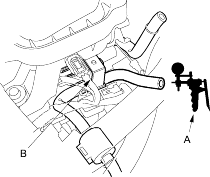

DTC P0171: Fuel System Too Lean
DTC P0172: |
Fuel System Too Rich |
NOTE: If some of the DTCs listed below are stored at the same time as DTC P0171 and/or P0172, troubleshoot those DTCs first, then recheck for P0171 and/or P0172.
P0107, P0108, P1128, P1129: Manifold Absolute Pressure (MAP) sensor
P0135: Primary Heated Oxygen Sensor (Primary HO2S) (Sensor 1) heater
P0137, P0138: Secondary HO2S (Sensor 2)
P0141: Secondary HO2S (Sensor 2) heater
P0401 P1491, P1498: Exhaust Gas Recirculation (EGR) system*
P1259: VTEC system*
*: D16W7, D16V1 engines
- Check the fuel pressure (see page 11-431).
Is fuel pressure OK?
YES |
- Go to step 2. |
NO |
- Check these items: |
- If the pressure is too high, replace the fuel pressure regulator (see page 11-438).

- If the pressure is too low, check the fuel pump, the fuel feed pipe, the fuel filter, and replace the fuel pressure regulator (see page 11-438).
- Start the engine. Hold the engine at 3,000 rpm with no load (in Park or neutral) until the radiator fan comes on.
- Check the primary HO2S (Sensor 1) output with the scan tool.
Does it stay at less than 0.3 V or more than 0.6 V?
YES |
- Replace the primary HO2S (Sensor 1). |
NO |
- Go to step 4. |
- Turn the ignition switch OFF.
- With a vacuum pump (A), apply vacuum to the evaporative emission (EVAP) canister purge valve (B) from the intake manifold side.

Does it hold vacuum?
YES |
- Go to step 6. |
NO |
- Replace the EVAP canister purge valve. |
- Turn the ignition switch ON (II).
- Check the manifold pressure with the scan tool.
Does it indicate atmospheric pressure?
YES |
- Go to step 8. |
NO |
- Replace the MAP sensor. |
- Start the engine.
- Check the MAP with the scan tool.
Is a MAP of 40.0 kPa (300 mmHg, 12.0 in.Hg) or less indicated within 1 second after starting the engine?
YES |
- Check the valve clearances and adjust if necessary. If the valve clearances are OK, replace the injector. |
NO |
- Replace the MAP sensor. |